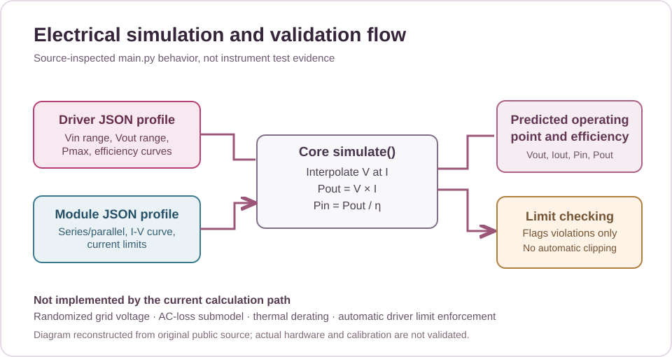
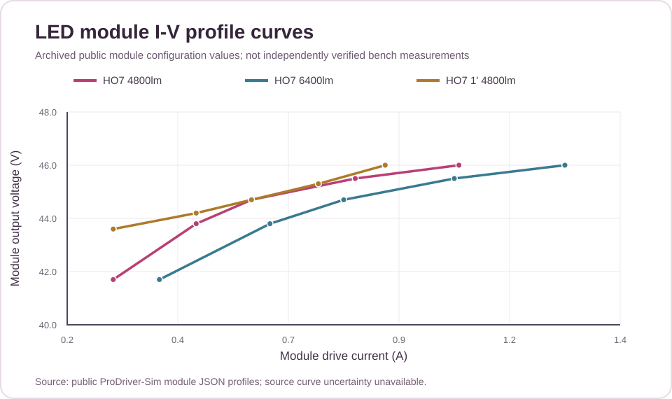
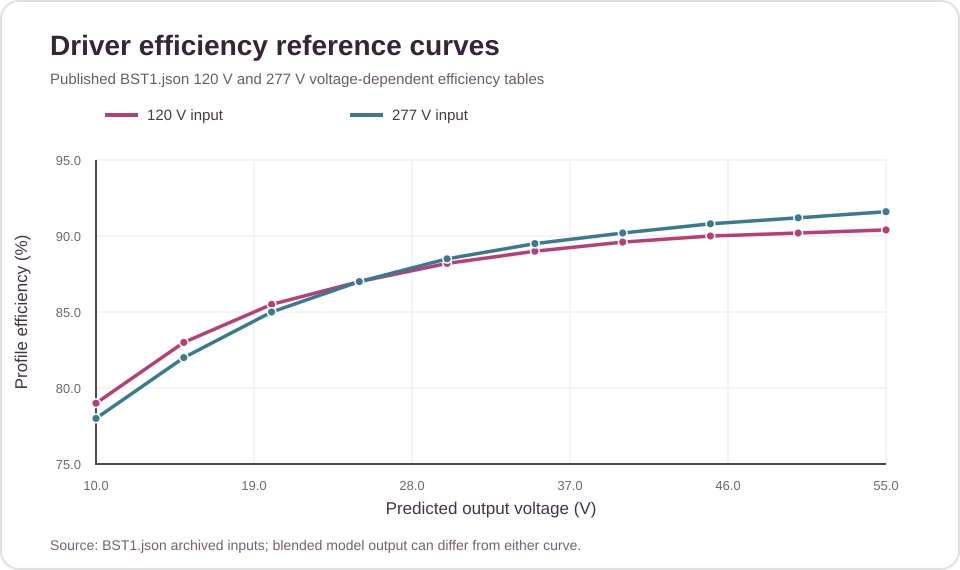

I wanted a tool that could connect electrical measurements with predictions. The simulation provides a way to compare driver and fixture behavior with observed bench results.
Engineering challenge
Estimate how electrical operating conditions affect an LED driver and fixture.
Methods and approach
Model voltage, current, load, and efficiency; compare predicted behavior with measurements.
Tools and environment
Python, PyQt6, electrical modeling, bench testing.
Evidence and limitations
This page summarizes the work documented in the portfolio project book. Where underlying test data, design files, or screenshots are not public, the summary does not imply those materials were independently verified.
Recovered engineering model
The original public Python application and LED driver/module JSON profiles were recovered. The implementation interpolates module I-V curves, estimates efficiency from driver profile tables, calculates DC output and estimated input power, and flags operating-limit violations. The current simulation reports out-of-range conditions rather than automatically limiting driver output.



Engineering calculations and validation
Using the public model tables, the nominal HO7 4800 lm configuration predicts 44.7 V at 0.60 A, or 26.82 W output. The HO7 6400 lm configuration predicts 44.7 V at 0.80 A, or 35.76 W output. These values are calculated estimates, not recovered bench readings. An independent offline model check, a synthetic test suite, and a verification matrix document what can be reproduced and what still requires instrument testing.
This page is based on the existing portfolio project description. It distinguishes reported results from targets and does not publish restricted NASA files or unavailable raw data.